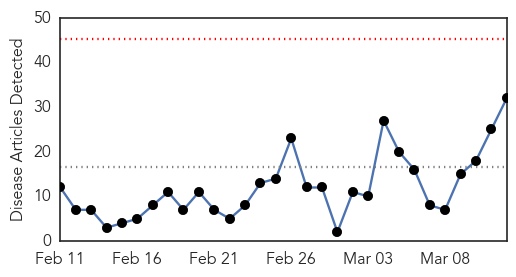
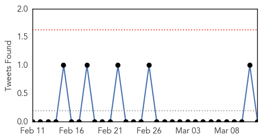
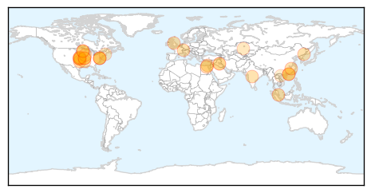
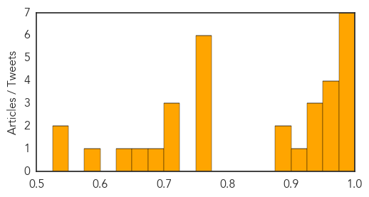

Measles
30-Day Web Trend
0 alerts, 0 warnings

30-Day Twitter Trend
3 alerts, 0 warnings

Article Locations

Article Confidences

Top Articles:
- 1.000
- Why measles could be worse for West Africa than Ebola
- 1.000
- Ebola Crisis Could Fuel Measles Outbreak in West Africa
- 1.000
- Measles Could Cause More Deaths Than Ebola In West Africa
- 0.999
- Countries Reeling From Ebola Are Facing A Big Measles Threat
- 0.998
- Ebola-sapped West African countries now face serious measles risk
- 0.994
- Plummeting vaccination rates mean measles could kill more than Ebola in affected countries
- 0.985
- Berlin counts 254 new cases of measles in 2015
- 0.977
- Measles outbreak in Niagara is over
- 0.973
- Measles cases predicted to almost double in Ebola epidemic countries
- 0.964
- Rise in measles cases predicted in Ebola-stricken areas
- 0.957
- 119 Confirmed Measles Cases in Quebec
- 0.950
- Confirmed measles cases offer vaccination reminder
- 0.936
- Publishing Local News and Entertainment for over 29 years in San Luis Obispo County, CA
- 0.933
- Health officials say 119 measles cases in Quebec
- 0.932
- Kyrgyzstan Kyrgyzstan: Bishkek Hopes it Has Passed Peak Measles
- 0.901
- Experts discuss the myths and misinformation surrounding vaccinations
- 0.890
- Doctor stresses vaccination safety
- 0.882
- Quebec rushes to vaccinate against measles in Joliette
- 0.878
- German biologist who denies measles virus exists ordered to pay
- 0.874
- Should we withhold child benefits from those who don't vaccinate?
- 0.869
- Delay vaccines for children? - IronMountainDailyNews.com
- 0.867
- Quebec rushes to vaccinate against measles in Joliette
- 0.857
- Measles kill toddler as Berlin school closes
- 0.853
- German biologist who denies measles virus exists ordered to pay
- 0.847
- Low vaccination rates could be improved by national registry: N.S. public health official - Halifax
- 0.841
- Aliso Niguel High School
- 0.839
- Medical Tyranny in Action in Oregon
- 0.828
- Africa overtaking US in the race against measles
- 0.828
- Tell lawmakers vaccines work
- 0.784
- View from QCA: Vaccinations safe, effective
- 0.721
- The Financial Gazette – Zimbabwe News
- 0.709
- Number of measles cases in Quebec jumps to 119 in region northeast of Montreal
- 0.678
- Measles Outbreak, Mandatory Vaccines in California: Doctors Bob Sears, Jay Gordon Counter Dr. Pan’s SB 277 on Public Radio
- 0.664
- CJAD 800 – News. Talk. Radio. :: Docs to Joliette students: get measles shot or stay home :: News
- 0.609
- Infant death sparks measles jab debate
- 0.574
- Alberta Liberal leader calls for mandatory vaccinations among kids in schools
- 0.540
- 5 Ways Obamacare Promotes Childhood Immunization and Vaccines?
Top Tweets:
- 0.680
- Very few people (about 3 out of 100) who get 2 doses measles vaccine still get measles if exposed to the virus.
Influenza
30-Day Web Trend
0 alerts, 0 warnings

30-Day Twitter Trend
0 alerts, 0 warnings

Article Locations
Article Confidences
Top Articles:
- 0.989
- Oklahoma's flu death toll rises to 98
- 0.988
- Flu deaths increase by 8 in Hong Kong
- 0.984
- State monitoring for Avian Influenza
- 0.981
- The Portland Press Herald / Maine Sunday Telegram
- 0.980
- Bird Flu Spreads in China and the U.S.
- 0.980
- Bird flu could become 'pandemic' threat to humans
- 0.976
- Spreading message of getting flu jab
- 0.974
- Flu Virus in China Has Pandemic Potential, Scientists Say
- 0.972
- Chinese Bird Flu Could Potentially Become a Pandemic
- 0.969
- Will Egypt unleash another flu pandemic?
- 0.958
- Bird flu study 'sounds the alarm' on strain’s pandemic potential
- 0.949
- Record winter mortality rate in France blamed on flu
- 0.942
- Bird flu spreads across China, posing threat to people - Cleveland 19 News
- 0.926
- Swine Flu Outbreak in India Raises Concern
- 0.900
- Flu pandemic begins
- 0.887
- Bird Flu Outbreak In Arkansas
- 0.882
- With student absences soaring due to illness, Eisenhower calls off classes Friday
- 0.751
- March 12, 2015 Archives
- 0.751
- March 12, 2015 Archives
- 0.751
- March 11, 2015 Archives
- 0.751
- March 11, 2015 Archives
- 0.751
- March 11, 2015 Archives
- 0.751
- March 11, 2015 Archives
- 0.720
- News in Brief: Week of March 9-13
- 0.702
- Bird Flu Found in Midwest
- 0.702
- KDA on lookout for strains of bird flu in poultry
- 0.681
- Avian influenza restrictions on B.C. poultry farms lifted by CFIA
- 0.657
- Missouri turkeys are infected with Avian Influenza Virus
- 0.643
- Bird flu discovered in Arkansas turkeys: USDA officials report
- 0.592
- USAID helps Vietnam prevent emerging contagious diseases
- 0.545
- Deadly Bird Flu confirmed at Second Turkey Farm in Missouri
- 0.543
- Bird Flu Scare For Tyson Foods, Inc. (TSN)
Top Tweets:
- 0.616
- Influenza A (H3N2) and influenza B fluvax components will be updated in next season’s flu vaccines. Learn more http://t.co/pugJMrBEgd
- 0.513
- Influenza A(H5N2) Virus Antibodies in Humans after Contact with Infected Poultry, Taiwan, 2012 http://t.co/JK539iW2JE